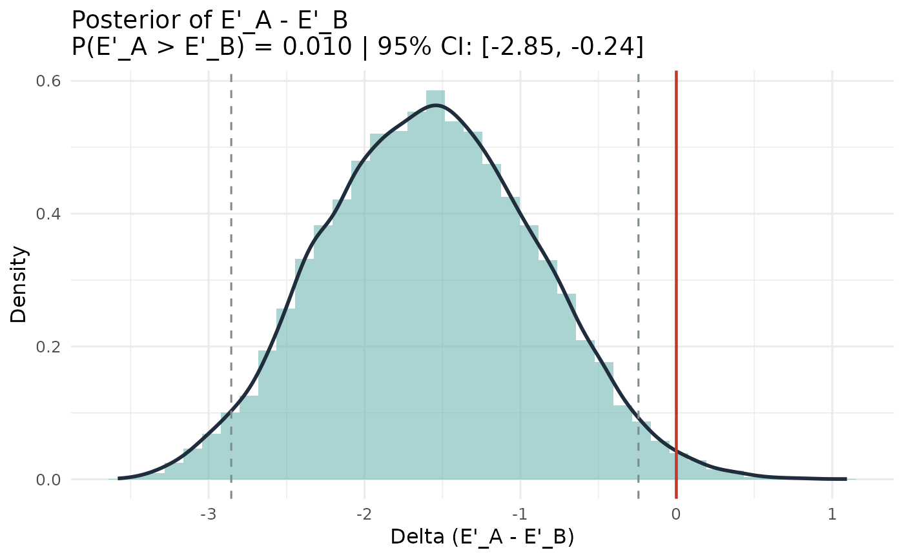

Bayesian Comparison of Tredoux Effective Size Across Two Lineups
Source:R/esize_T_bayes.R
esize_T_bayes_compare.RdFits independent Dirichlet-Multinomial models to two lineup tables and returns the posterior distribution of the difference in Tredoux E'.
Arguments
- table_a
A table of choice counts for lineup A.
- table_b
A table of choice counts for lineup B.
- alpha
Dirichlet concentration parameter(s). Applied to both lineups. A scalar or a length-k vector (both lineups must have the same k). Default 0.5 (Jeffreys).
- S
Number of posterior draws per lineup. Default 10000.
- credible_mass
Width of the equal-tailed credible interval for the difference. Default 0.95.
Value
An object of class "esize_T_bayes_compare" containing:
- delta
Posterior draws of Delta = E'_A - E'_B.
- posterior_mean
Posterior mean of Delta.
- posterior_median
Posterior median of Delta.
- credible_interval
Named 2-vector (lower, upper) for Delta.
- P_A_greater
Posterior probability that E'_A > E'_B.
- P_B_greater
Posterior probability that E'_B > E'_A.
- result_a
The
esize_T_bayesobject for lineup A.- result_b
The
esize_T_bayesobject for lineup B.- credible_mass
Credible interval width.
- S
Number of posterior draws.
Details
Independent Dirichlet-Multinomial posteriors are fitted for each lineup. The posterior of Delta = E'_A - E'_B is obtained by subtracting corresponding draws. P(E'_A > E'_B | data) is reported directly.
When the two lineups have different nominal sizes (different k), alpha must be a scalar; it is expanded independently for each lineup.
References
Tredoux, C. G. (1998). Statistical inference on measures of lineup fairness. Law and Human Behavior, 22(2), 217-237.
Examples
counts_a <- c(20, 5, 5, 5, 5, 5)
counts_b <- c(10, 8, 8, 8, 8, 8)
tab_a <- as.table(setNames(counts_a, 1:6))
tab_b <- as.table(setNames(counts_b, 1:6))
result <- esize_T_bayes_compare(tab_a, tab_b)
print(result)
#> Bayesian Comparison: Tredoux Effective Size (E'_A vs E'_B)
#> -----------------------------------------------------------
#> Lineup A: k = 6, N = 45 | Lineup B: k = 6, N = 50
#> S (draws): 10000 Prior: Dirichlet(alpha = 0.50)
#> E'_A posterior median: 3.899
#> E'_B posterior median: 5.521
#> Delta (E'_A - E'_B) posterior mean: -1.570
#> Delta posterior median: -1.580
#> 95% credible interval for Delta: [-2.855, -0.243]
#> P(E'_A > E'_B | data): 0.010
#> P(E'_B > E'_A | data): 0.990
plot(result)
